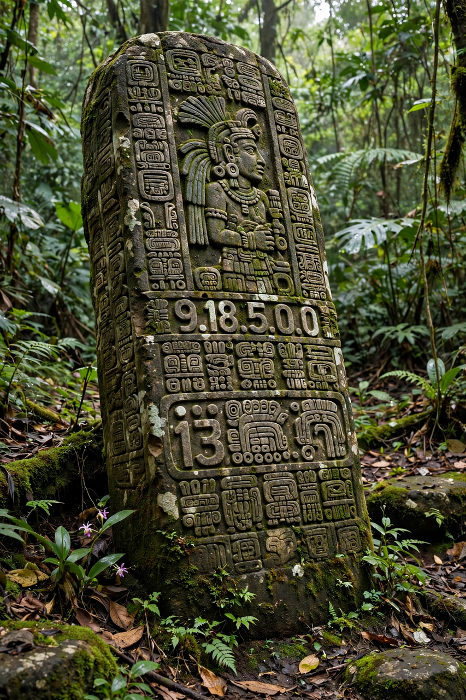

Maya calendar
| Maya calendar | |
|---|---|
| Systems | Tzolk'in (260-day); Haab' (365-day); Calendar Round (52-year); Long Count |
| Long Count epoch | August 11, 3114 BC (GMT correlation) |
| Long Count units | Kin (day); uinal (20 days); tun (360 days); katun (7,200 days); baktun (144,000 days) |
| Famous date | 13.0.0.0.0 — December 21, 2012 |

The Maya calendar is a system of interlocking calendars used by the Maya civilisation of pre-Columbian Mesoamerica and still maintained, in part, by Maya peoples of highland Guatemala. It is the most sophisticated calendrical system of the ancient Americas, combining a 260-day ritual count, a 365-day solar year, a 52-year cycle formed by their interaction, and the Long Count, an absolute tally of days from a mythic creation date in 3114 BC.
The Tzolk'in and the Haab'
The Tzolk'in ("division of days") combines a cycle of 13 numbers with 20 named days — Imix, Ik', Akbal, Kan, Chicchan, Cimi, Manik, Lamat, Muluc, Ok, Chuen, Eb, Ben, Ix, Men, Kib, Kabán, Etz'nab, Kawak, Ajaw — to produce a sacred round of 260 unique days used for divination, naming children, and timing rituals and agriculture. Its origin is debated (proposals include the human gestation period and the interval between zenith passages of the sun at Maya latitudes). The Haab' is a solar year of 365 days: eighteen months of twenty days (Pop, Wo, Sip, Sotz', Sek, Xul, Yaxk'in, Mol, Ch'en, Yax, Sak, Keh, Mak, K'ank'in, Muwan, Pax, K'ayab, Kumk'u) plus a five-day closing period, the Wayeb, considered dangerous and unlucky. A given date was usually stated in both counts.
Calendar Round and Long Count
Because 260 and 365 share the factor 5, the combined Tzolk'in–Haab' date repeats every 18,980 days — 52 Haab' years — the Calendar Round, celebrated by many Mesoamerican peoples (the Aztec New Fire ceremony marked its completion). For longer spans the Maya used the Long Count, a modified base-20 count of days from the creation epoch: 20 kins = 1 uinal; 18 uinals = 1 tun (360 days); 20 tuns = 1 katun; 20 katuns = 1 baktun (144,000 days, about 394 years). Dates are written as five numbers, e.g. 9.15.10.0.0, and were carved on stelae to anchor royal histories in deep time; the Maya also tracked Venus, eclipses and the moon with extraordinary precision.
2012 phenomenon
The completion of the thirteenth baktun on 13.0.0.0.0 (December 21, 2012, by the standard Goodman–Martínez–Thompson correlation) gave rise, from the 1970s onward, to a popular "2012 phenomenon" of predictions ranging from apocalypse to spiritual transformation. Maya scholars pointed out that only two known inscriptions mention the date, that one of them (Tortuguero Monument 6) treats it as a remote anniversary rather than an end, and that living Maya day-keepers regarded the fuss with bemusement; the Maya calendar itself simply continues into the fourteenth baktun.
Survival
Colonial persecution destroyed most Maya books, but the Tzolk'in survived in daily use among K'iche', Mam, Ixil and other highland communities, where trained day-keepers (ajq'ij) still divine and conduct ceremonies by it — one of the oldest continuously used calendars in the world.
See also: Mesoamerican religion · Hunahpu · Xbalanque